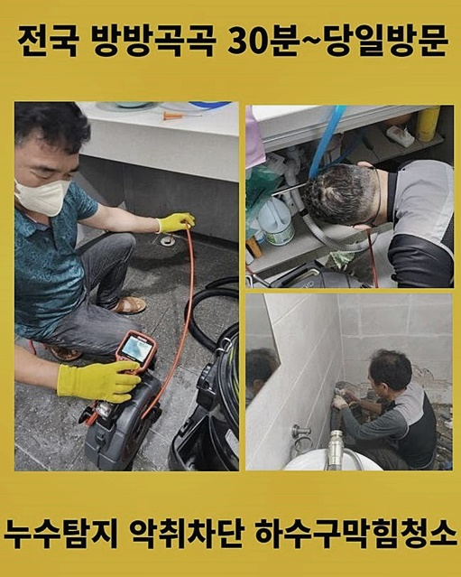
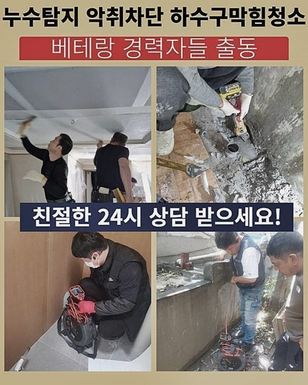
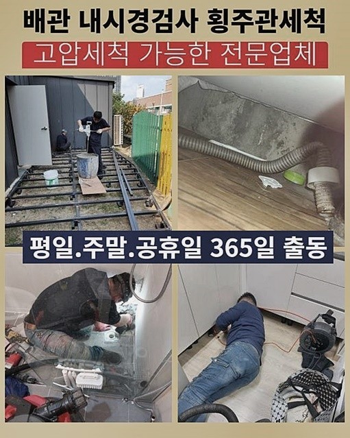
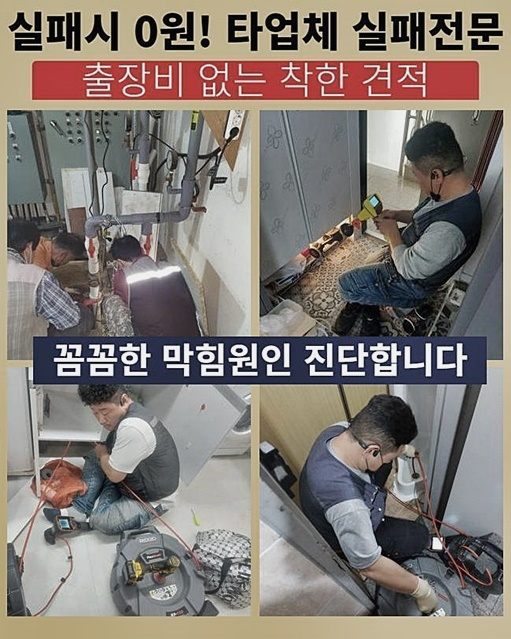
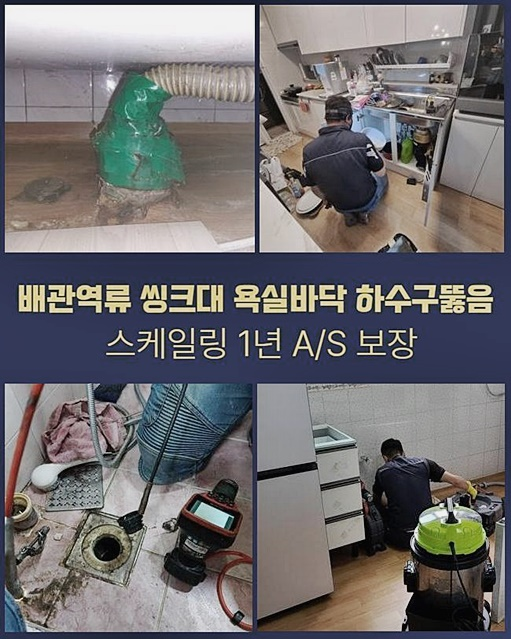

🏠 중구 광희동하수도역류 중림동 배관뚫기 해결방법
용인시 처인구 배관막힘 전문 시공 후기

📋 작업 개요
- 위치: 용인시 처인구, 수원시 영통구, 화성시 동탄
- 서비스 유형: 배관막힘, 누수수리, 고압세척, 내시경점검
- 작업 일시:
- 업체명: 하수구수사대 (010-5615-2118)
🔍 문제 상황
중구 광희동하수도역류 중림동 배관뚫기 해결방법
쉽게 해결되는 하수오류가 아닐 경우 배수로를 오차없이 주시해야될 필요성들이 존재합니다
직접적인 문제들이 보이지 않아도 쌓인 이물의 경우 뒤엉키면서 심각한 심화된 피해들로 불거져요
구분건축물에 살고있는 고객분이면 막혀버려서 예상치못하게 이웃들에게 좋지못한 영향들을 미치게되므로 막힘의 이상징후가 보이면 조속하게 이유를 파헤쳐야 해요
왜냐면 통수오류의 경우 심해질때 역류들이 야기되거나 누수증세가 발생될 가능성들이 많으므로 처리를 서둘러 진행해주면 더 큰 문제들을 마주하지 않을 수 있죠
이런 이유로 전문업체의 입장으로 생각해 볼때에 신속히 처리하는걸 지속적으로 안내하는 내막도 분명하게 있는것인데요
다양한 사람들이 위치한 건축물이라면 가지배관들이 뒤엉켜있어서 다양한 구간으로 오수가 이동하게됩니다
설명드릴 사례의 경우 상업점포와 주거지들이 혼재한 거주공간에서 생겨났죠
상가건물도 함께 있을땐 라인위치가 복잡하게 자리잡고있는것이 많겠지만
오늘 방문한 곳에서는 무난했던 모습으로 보여졌어요
내방했던 건축물서도 가정에서 배수오류가 나타났다고 하여 그곳으로 발걸음을 옮겼죠
당도하여 살피니 다행으로 아래의 시설은 멀쩡했고 해당 위치는 화장실로서 바로 진단했죠

🔎 원인 분석
💡 전문가 진단: 정밀 진단 장비를 사용하여 슬러지의 고착 여부를 판명하고 타격/세척 작업을 실시했습니다.
천장위치에 설치된 개방구들을 개방시키니 가로지르는 큰 배수관의 형태가 보였어요
관찰결과 하수관로에 구멍을 뚫는 자국이 있는 상태였죠
오래도록 지속적으로 막힌 증상이 생겨서 작업들을 실시하지않았나 판단할 수 있었어요
양상에 따라 막히는 문제들이 야기되거나 원인들이 밝혀지지를 못해서 지속적으로 증세가 생겨나요
이와같은 것을 안 뒤 위에 위치한 공간으로 당도해 즉각 하수도 컨디션을 관찰해보고자 했습니다
살펴보니 지금은 막혀버린 탓에 내시경기가 투입될 수 없는 상태였어요
이 경우에서는 석션기기로 부유물들을 제거시키고 내시경도구를 써주는데요
석션장치를 배수로에 접합시킨후에 강도들을 조절해주며 작업했는데 기대완달리 대다수가 하수들이였고 조금의 부유물만 배출되었어요
증세를 관찰하려면 내시경기기를 이용하여 내부를 살펴야하겠습니다
어디서 막히게된건지 왜 역류증상들이 나타나게된건지 염두에두며 관찰을 이어가니 진단을 실시하는 공간에서보단 밑으로 자리를 옮겨 천장부에서 접근해나가 뚫어내는게 원활한 해결이 될거라 생각했어요
진단결과에 따라서 이처럼 수리의 방향을 조정하면서 진행시켜요 필요할때라면 내부서 막혀버린 문제여도 밖에 위치한 배수로에서도 수리를 하기도 해요
막힘들을 고쳐내는 이상적인 작업공간을 찾는것도 전문인의 실력이라 여겨집니다
상황 파악 후 아랫층의로 자리를 옮겨서 막힌 배수관을 뚫어내기위한 준비에 착수했어요

🔧 작업 과정
하수관로를 시정해내기위해서 이용해주었던 것은 샤프트장치라는 것이에요
일반적으로 장소에서 대부분 쓰고있는 기기로서 부유물들을 타격해주어 스케일링도 이행하죠
샤프트장치를 넣어서 고착물을 분쇄했어요
이번해결을 위해 일반의 사항관 다른양상으로 하수관의 크기가 컸으며 잔해물들도 상당했던 탓에 샤프트만으론 역부족임을 느꼈어요
오늘의 해결을 목적으로 고압청소의 방식들이 있어야한다는 생각이 들었습니다
힘이 좋은 물들을 사용하여 이물을 제거시켜야 올바른 방향으로 풀어낼 수 있었는데요
여유공간들이 파악될 수 없을정도로 여기저기 위치해있었죠
예상으로는 이미 왔다간 업체에선 석션기기와 샤프트기 운용의 단계들만 실시하고서 철수한 걸로 보여졌죠
때문에 잠깐은 쓸 수 있었겠으나 문제가 계속적으로 반복되고 앞으로 하수도가 버텨내는것이 힘들정도였습니다
저희전문진이 문제를 맡았으니 제대로 증상을 풀어가고싶었어요
샤프트장비말고 쎈 크란즐기기를 준비하여 연결을 시켜보았죠
사실 고압노즐방식이 세척을 할때 강한 물을 뿜어 청소를 하기때문에 안전준수를 철저히해야해요
문제에 맞는 방식들을 수행하지않는다면 문제들을 없애주는게 불가능하기에 재차 오늘처럼 재발로 이어질 가능성이 높습니다
그러하기에 고객분도 며칠을 간격으로 막힘이 도드라지는 쳇바퀴에서 벗어나고자 저희업체께 문의를 주셨습니다
청소를 진행할땐 간소하게 문제 위치만 시공하는것이 아닌 원인부분을 문제없이 타격하여 배수라인이 넓어지게끔 뒤탈없이 세척을 할 예정이에요
이전작업을 할 때 타공해놓은 구멍에 크란즐을 넣어주었고 내부 세척을 실시해주었어요
그렇지않아도 주거지라면 관로의 지름이 좁기에 해당 과정이 수월하지만은 않았는데요 허나 지속적으로 몰두해서 세척과정을 수행했죠
물리성이 뛰어난 청수가 뿜어져 나오면서 배수관을 복귀해냈고 전구간에 걸쳐 빈틈없이 뚫어냈어요
고압 이물제거를 하여 물이 배출되는 시점에 약간의 사항이 없는 수준으로 뒤탈없이 작업이 끝나게되었죠
마침내 통수진행 상황 파악을 진행하여 하수구막힘 청소를 정리해주었습니다


✅ 작업 완료
보통 가정에서는 크란즐 사용을 이행하는 곳은 자주 있진 않아요 하지만 문제양상을 보고 실시가 필요하다는 판단을 거쳐 제대로 세척을 진행했습니다
주기적으로 증세가 야기될수준의 이물질이 고착화까지 진행되었기에 수리를 마치고 나니 저희전문진도 기분이 좋았는데요
상황에따라 구조또는 이런저런 요소가 다른 탓에 쓰이는 전문기계나 과정들도 적재적소 준비를 해야합니다
곧바로 과거에 진행했던 노하우를 바탕해서 재발없는 시공으로 배관들을 고쳐냅니다
여러분의 노력들이 온전히 잘 쓰일수있게 저희전문진이 돕겠습니다


⚠️ 하수구 배관 막힘 예방 및 관리 가이드
- ✅ 머리카락, 비닐, 물티슈 등 물에 분해되지 않는 이물질은 절대 흘려보내지 마세요.
- ✅ 기름기 많은 식기는 설거지 전 키친타올로 먼저 기름때를 닦아내세요.
- ✅ 주기적으로 배수구에 뜨거운 물을 가득 부어주어 유지방 고착을 방지하세요.
- ✅ 작업 후 1년 이내 재발 시 무상 A/S 보증 서비스를 제공합니다.
💡 핵심 정리
- 확실한 장비 작업(내시경 점검 및 샤프트 스케일링)으로 원인을 뿌리 뽑습니다.
- 작업 후 1년 이내에 동일한 부위 재발 시 100% 무상 A/S 서비스를 보장합니다.
- 서울 · 경기 · 인천 전 지역에 24시간 언제든 긴급 출동할 수 있도록 항시 대기 중입니다.
❓ 자주 묻는 질문 (FAQ)
🚨 용인시 처인구 배관막힘 문제로 고민이신가요?
정확한 원인 진단과 확실한 시공으로 재발 없는 해결을 약속드립니다.
24시간 긴급 출동 | 서울 · 경기 · 인천 전지역 | 1년 내 재발 시 무상 A/S